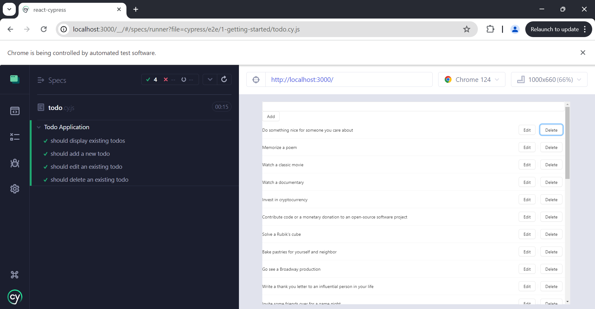

Introduction
In very simple words :
Cypress : An automation testingCypress runner runs inside our web app and can inject code using javascript as it shares the same origin

npm install cypress --save-devnpm run test


Let us understand the folder structure in Cypress. The factors that are included in a Cypress folder are explained below:
fixtures: Test data in form of key-value pairs for the tests are maintained here.e2e : Test cases for the framework are maintained here and is used for comprehensive user journey tests across the entire application.integration: Test cases for the framework are maintained here and is used for testing specific parts or features interacting within the application.plugins: Cypress events (prior and post events to be executed for a test) are maintained here.support: Reusable methods or customized commands, which can be utilised by testcases directly, without object creation are created here.videos: Executed test steps are recorded in the form of videos and maintained here.node_modules: Project dependencies from the npm are maintained in this folder. It is the heart of the Cypress project execution.cypress.json: Default configurations are set in this folder. The values of the current configurations can be modified here, which overrules the default configurations.package.json: Dependencies and scripts for the projects are maintained in this folder..cy.js extension in the e2e folder in the cypress folder

describe("My First Test", () => {
it("Landing Page", () => {
cy.visit("http://localhost:3000");
cy.contains("Learn React");
});
});
cy.get('button').click() Never Worst : Too generic, no context.cy.get('.btn.btn-large').click() Never Bad : Coupled to styling. Highly subject to change.cy.get('#main').click() Sparingly Better : But still coupled to styling or JS event listeners.cy.get('[name="submission"]').click() Sparingly : Coupled to the name attribute which has HTML semantics.cy.contains('Submit').click() Depends Much better : But still coupled to text content that may change.cy.get('[data-cy="submit"]').click() Always Best :Isolated from all changes.This method is used to group related test cases. It takes two arguments: a string that describes the group of test cases and a callback function that contains the individual test cases.
This method is used to define a test case. It takes two arguments: a string that describes the test case and a callback function that contains the actual test code
This method is used to run a setup function before any test case in a particularly described block. It can be used to set up the test environment, initialize variables, and perform other setup tasks.
This method is used to run a cleanup function after all the test cases in a particularly described block have finished running. It can be used to clean up the test environment, close open connections, and perform other cleanup tasks.
This method is used to run a setup function before each test case in a particularly described block. It can be used to reset the state of the test environment and perform other setup tasks.
This method is used to run a cleanup function after each test case in a particularly described block has finished running. It can be used to reset the state of the test environment and perform other cleanup tasks.
When dealing with a large codebase and wanting to concentrate on specific tests or subsets of tests, the .skip() function provides a handy means to temporarily prevent certain tests from being executed.
It is used to create an assertion and is an alias of .should ().
//element is visible & enabled
cy.get("#txt").should("be.visible").and("be.enabled");
//element is checked
cy.contains("Subject").and("be.checked");
It provides an alias for later usage.
//alias element as parent
cy.get("#txt").find("li").first().as("parent");
It blurs an element in focus.
//blur input
cy.get("#txt").type("abc").blur();
It checks radio buttons or checkboxes and is applied to elements having input tags.
//checks element having class attribute chkbox
cy.get(".chkbox").check();
It obtains the sub elements of an element.
//obtains children of element n
cy.get("n").children();
It removes the value from textarea or input.
//removes input abc
cy.get("#txt").type("abc").clear();
It removes a particular browser cookie.
//clear abc cookie
cy.clearCookie("abc");
It removes the browser cookies from an existing domain and subdomain.
//clear all cookies
cy.clearCookies();
It removes the local Storage data from an existing domain and subdomain.
//clear all local storage
cy.clearLocalStorage();
It clicks an element in Document Object Model (DOM).
//click on element with id txt
cy.get("#txt").click();
It obtains an element having a specific text. The element can have more than the text and still match.
//returns element in #txt having Tutor text
cy.get("#txt").contains("Tutor");
It double-clicks an element in Document Object Model (DOM).
//double clicks element with id txt
cy.get("#txt").dblclick();
It fixes a debugger and log values are returned by prior command.
//pause to debug at start of command
cy.get("#txt").debug();
It obtains window.document on the active page.
cy.document();
It iterates through an array having the property length.
//iterate through individual li
cy.get('li').each(() => {...})
It ends a command chain.
//obtain null instead of input
cy.contains("input").end();
It refers to an element at a particular index in an array of elements.
//obtain third td in tr
cy.get("tr>td").eq(2);
It runs a system command.
cy.exec("npm init");
It obtains the descendant elements of a particular locator.
//obtain td from tr
cy.get("tr").find("td");
It obtains the first element from a group of elements.
//obtain first td in tr
cy.get("tr>td").first();
It obtains single or multiple elements by locator. It obtains the descendant elements of a particular locator.
//obtain all td from tr in list
cy.get("tr>td");
It obtains a particular browser cookie by its name.
cy.getCookie("abc");
It obtains all the cookies
cy.getCookies();
It moves forward or backward to the next or previous URL in browser history.
//like clicking back button
cy.go("back");
//like clicking forward button
cy.go("forward");
It launches an URL.
cy.visit("https://www.tutorialspoint.com/index.htm");
It obtains the immediate sibling of an element within a group of elements in Document Object Model (DOM).
//gives the following link in element l.
cy.get("l a:first").next();
It obtains the parent element from a group of elements in DOM.
//get parent of element with class h
cy.get(".h").parent();
It is used to create an assertion and is an alias of .and ().
//assert element is visible & enabled
cy.get("#txt").should("be.visible").and("be.enabled");
Wait for a certain time in milliseconds or for an aliased element prior to moving the following step.
cy.wait(1000);
It obtains the document.title of the active page.
cy.title();
It manages the dimension and positioning of the screen.
// viewport to 100px and 500px
cy.viewport(100, 500);
It prints the messages to the Command Log.
cy.log("Cypress logging ");
It is used for page reloading.
cy.reload();
import React, { useState, useEffect } from "react";
import { Button, Checkbox, Input, List } from "antd";
import axios from "axios";
import "antd";
const Todo = () => {
const [todos, setTodos] = useState([]);
const [newTodo, setNewTodo] = useState("");
useEffect(() => {
axios.get("https://dummyjson.com/todos").then((response) => {
setTodos(response.data.todos);
});
}, []);
const handleEdit = (index) => {
const todo = todos[index];
const updatedTodo = prompt("Edit todo:", todo.todo);
if (updatedTodo) {
const newTodos = [...todos];
newTodos[index] = { ...todo, todo: updatedTodo };
setTodos(newTodos);
}
};
const handleDelete = (index) => {
const newTodos = todos.filter((_, i) => i !== index);
setTodos(newTodos);
};
const handleAdd = () => {
if (newTodo) {
const newTodos = [{ todo: newTodo, completed: false }, ...todos];
setTodos(newTodos);
setNewTodo("");
}
};
return (
<div>
<Input
value={newTodo}
onChange={(e) => setNewTodo(e.target.value)}
onPressEnter={handleAdd}
/>
<Button onClick={handleAdd}>Add</Button>
<List
dataSource={todos}
renderItem={(todo, index) => (
<List.Item
actions={[
<Button onClick={() => handleEdit(index)}>Edit</Button>,
<Button onClick={() => handleDelete(index)}>Delete</Button>,
]}
>
<span>{todo.todo}</span>
</List.Item>
)}
/>
</div>
);
};
export default Todo;
Setup with beforeEach: Ensures the application is in a consistent state before each test by visiting the base URL.Display Existing Todos:
Add a New Todo:
Simulates user input to add a new todo and verifies if it appears as the first item in the list.Edit an Existing Todo:
Simulates clicking the edit button, stubbing the prompt to simulate user input, and verifying the change.Delete an Existing Todo:
Records the initial number of todos, simulates deleting the first item, and verifies the count is reduced by one.// cypress/e2e/todo.cy.js
// Describe block to group related tests for the "Todo Application"
describe("Todo Application", () => {
// beforeEach hook to run setup code before each test
beforeEach(() => {
// Visit the application URL before each test
cy.visit("http://localhost:3000");
// Note: Adjust the URL according to your development server
});
// Test to verify that existing todos are displayed correctly
it("should display existing todos", () => {
// Fetch todos from an external API and check the response
cy.request("https://dummyjson.com/todos").then((response) => {
// Ensure the response status is 200 (OK)
expect(response.status).to.eq(200);
// Extract todos from the response body
const todos = response.body.todos;
// Check if the list container exists in the DOM
cy.get(".ant-list-items").should("exist");
// Verify the number of displayed todos matches the fetched data
cy.get(".ant-list-item").should("have.length", todos.length);
});
});
// Test to verify adding a new todo
it("should add a new todo", () => {
const newTodoText = "New Cypress Todo";
// Type new todo text in the input field and press Enter
cy.get("input").type(newTodoText).type("{enter}");
// Verify the new todo is added as the first item in the list
cy.get(".ant-list-item").first().should("contain.text", newTodoText);
});
// Test to verify editing an existing todo
it("should edit an existing todo", () => {
const editedTodoText = "Edited Cypress Todo";
// Edit the first todo in the list
cy.get(".ant-list-item")
.first()
.within(() => {
// Click the Edit button of the first todo
cy.contains("Edit").click();
});
// Simulate user input in the prompt dialog for editing
cy.window().then((win) => {
// Stub the prompt to return the edited text
cy.stub(win, "prompt").returns(editedTodoText);
});
// Confirm the edit action by clicking the Edit button again
cy.get(".ant-list-item").first().contains("Edit").click();
// Verify the edited todo text is displayed correctly
cy.get(".ant-list-item").first().should("contain.text", editedTodoText);
});
// Test to verify deleting an existing todo
it("should delete an existing todo", () => {
// Get the initial number of todos in the list
cy.get(".ant-list-item").then((initialItems) => {
const initialLength = initialItems.length;
// Delete the first todo in the list
cy.get(".ant-list-item")
.first()
.within(() => {
// Click the Delete button of the first todo
cy.contains("Delete").click();
});
// Get the updated number of todos in the list
cy.get(".ant-list-item").then((updatedItems) => {
const updatedLength = updatedItems.length;
// Verify the number of todos is reduced by one
expect(updatedLength).to.equal(initialLength - 1);
});
});
});
});
